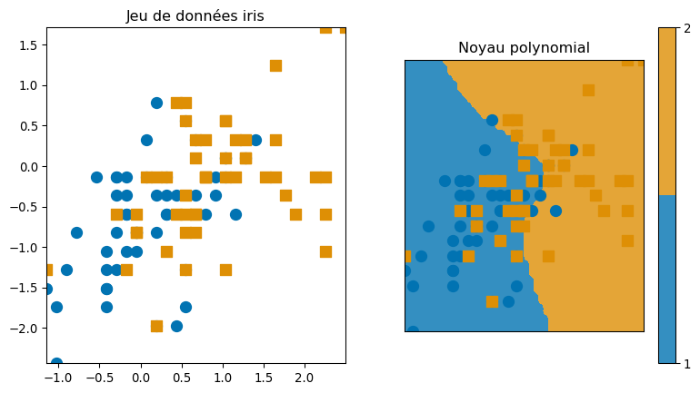
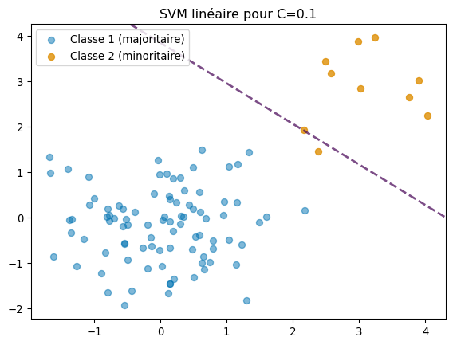
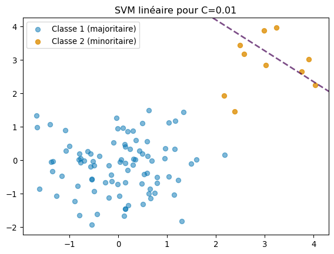
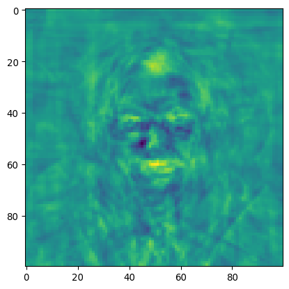

L’objectif de ce TP est de se familiariser avec la méthode de classification dite de Support Vector Machine (SVM). Dans la suite, on implémentera cette technique sur différents jeux de données réels et simulés grâce au package scikit-learn de Python. On se concentrera principalement sur la compréhension et la maîtrise des principaux paramètres afin d’en ajuster la flexibilité et d’en évaluer l’impact sur les performances.
Question 1
# Chargement du jeu de donnéesiris = datasets.load_iris()X = iris.dataX = scaler.fit_transform(X)y = iris.targetX = X[y !=0, :2]y = y[y !=0]# Fonction train_test_split du package sklearnX_train, X_test, y_train, y_test = train_test_split( X, y, test_size=0.25, random_state=42, stratify=y)# Réalisation du SVM linéairesvm_linear = SVC(kernel='linear')svm_linear.fit(X_train, y_train) # fitting sur la partie trainy_pred_linear = svm_linear.predict(X_test)score_linear = svm_linear.score(X_test, y_test)print('Score du modèle linéaire : %s'% score_linear)# Fonction de décision pour le traçagedef f_linear(xx):return svm_linear.predict(xx.reshape(1, -1))# Plot plt.ion()plt.figure(figsize=(15, 5))plt.subplot(131)plot_2d(X, y)plt.title("iris dataset")plt.subplot(132)frontiere(f_linear, X, y)plt.title("linear kernel")
Score du modèle linéaire : 0.64
Text(0.5, 1.0, 'linear kernel')
Pour cet aléa précis, on trouve un score de 0,64, ce qui est faible. Comme on peut le voir sur le jeu de données iris, les deux classes sont bien mélangées, ce qui peut expliquer ce score médiocre.
# Définition des hyperparamètres à testerparameters = {'kernel': ['linear'], 'C': list(np.logspace(-3, 3, 200))}# Créer le modèle SVM (objet vide que l'on complétera par la suite)svm = SVC()# fonction GridSearchCV de sklearn pour trouver le meilleur Csvm_linear_opt = GridSearchCV(svm, parameters, cv=5) # cv=5 : validation croisée 5 foissvm_linear_opt.fit(X_train, y_train) # Affichage du scoreprint("Score généralisé pour le noyau linéaire : Train : %.3f | Test : %.3f"% (svm_linear_opt.score(X_train, y_train), svm_linear_opt.score(X_test, y_test)))
Score généralisé pour le noyau linéaire : Train : 0.707 | Test : 0.680
Pour le score généralisé, on trouve une performance de 0,707 pour la partie d’apprentissage et 0,680 pour la partie de test. Ainsi, même en essayant d’optimiser le noyau linéaire, la précision est faible. On va maintenant voir si une méthode polynomiale peut améliorer ce score.
Question 2
Passons au noyau polynomial maintenant :
# On fait la même chose que précédemment mais avec un svm polynomialX_train, X_test, y_train, y_test = train_test_split( X, y, test_size=0.25, random_state=42, stratify=y)svm_poly = SVC(kernel='poly')svm_poly.fit(X_train, y_train)y_pred_poly = svm_poly.predict(X_test)score_poly = svm_poly.score(X_test, y_test)print('Score du modèle linéaire : %s'% score_poly)def f_poly(xx):return svm_poly.predict(xx.reshape(1, -1))plt.ion()plt.figure(figsize=(15, 5))plt.subplot(131)plot_2d(X, y)plt.title("Jeu de données iris")plt.subplot(132)frontiere(f_poly, X, y)plt.title("Noyau polynomial")
Score du modèle linéaire : 0.6
Text(0.5, 1.0, 'Noyau polynomial')

Pour un noyau polynomial et cet aléa, on trouve un score de 0,6, ce qui est encore plus faible que pour le noyau linéaire. Ce résultat peut sembler assez paradoxal de prime abord, mais il semble en réalité logique au vu de la structure des données. Le modèle polynomial doit certainement complexifier trop la frontière tout en étant mal régularisé.
# Paramètres que l'on va tester pour trouver les meilleursCs =list(np.logspace(-3, 3, 5))gammas =10.** np.arange(-2, 2) degrees = np.r_[1, 2, 3]parameters = {'kernel': ['poly'], 'C': Cs, 'gamma': gammas, 'degree': degrees}# idem que précédemmentsvm = SVC()svm_poly_opt = GridSearchCV(svm, parameters, cv=5)svm_poly_opt.fit(X_train, y_train)print("Best parameters:", svm_poly_opt.best_params_)print("Score généralisé pour le noyau polynomial : Train : %.3f | Test : %.3f"% (svm_poly_opt.score(X_train, y_train), svm_poly_opt.score(X_test, y_test)))
Best parameters: {'C': np.float64(0.03162277660168379), 'degree': np.int64(1), 'gamma': np.float64(1.0), 'kernel': 'poly'}
Score généralisé pour le noyau polynomial : Train : 0.707 | Test : 0.640
Pour les paramètres généralisés trouvés (c = 0,03 ; degré = 1 et gamma = 1), on trouve un score de 0,707 pour la partie d’apprentissage et 0,64 pour le test. Ainsi, on a le même score généralisé que pour le noyau linéaire pour la partie apprentissage, mais lorsqu’on l’applique à la partie de test, on perd plus en précision que pour le modèle linéaire.
On obtient les graphes suivants, qui sont donc identiques car le polynôme optimal est de degré 1 :
Ainsi, ces 2 classes du jeu de données iris semblent très difficiles à séparer, la méthode de SVM est peu adaptée ici, que l’on emploie un SVM linéaire ou polynomial.
Question 3 (facultative)
Commençons par générer le jeu de données très déséquilibré, sans faire vraiment attention à la répartition des points :
# Création du jeu de donnéesn =1000# nombre d'observationsclasses = np.random.choice([0,1], size=n, p=[0.9,0.1]) # classes 1 et 2 avec respectivement p=90% et p=10%# Variables pour SVMX = np.random.randn(n, 2)Y = classes
On obtient les graphes suivants :
def plot_svm(C_value): clf = SVC(kernel='linear', C=C_value) clf.fit(X, Y) plt.figure() plt.title(f"SVM linéaire pour C={C_value}")# Tracer les points plt.scatter(X[Y ==0][:, 0], X[Y ==0][:, 1], label="Classe 1 (majoritaire)", alpha=0.5) plt.scatter(X[Y ==1][:, 0], X[Y ==1][:, 1], label="Classe 2 (minoritaire)", alpha=0.8)# Tracer la frontière ax = plt.gca() xlim = ax.get_xlim() ylim = ax.get_ylim() xx, yy = np.meshgrid( np.linspace(xlim[0], xlim[1], 100), np.linspace(ylim[0], ylim[1], 100) ) Z = clf.decision_function(np.c_[xx.ravel(), yy.ravel()]) Z = Z.reshape(xx.shape) ax.contour(xx, yy, Z, levels=[0], linewidths=2, linestyles="--", alpha=0.7) plt.legend() plt.show()# Afficher plusieurs valeurs de Cfor C in [1, 0.1, 0.01]: plot_svm(C)
Sur un jeu de données purement aléatoire, on observe que le paramètre C n’a aucune influence, les frontières n’apparaissent même pas. Ceci est logique car les données sont impossibles à séparer facilement, il n’y a aucune logique sous-jacente à cette répartition des points.
Si on prend maintenant un jeu de données plus structuré, on obtient :


Ici, on voit l’action du paramètre C, la frontière se déplace dans les différents exemples. Quand C devient vraiment trop petit, la frontière n’est plus du tout au bon endroit : le modèle accepte trop les erreurs même s’il n’y a plus aucune variance. Ainsi, pour un jeu de données trop disproportionné, le C ne doit pas être trop petit.
Question 4
Dans cette question, nous étudions l’influence du paramètre de régularisation C C sur les performances du SVM. Pour cela, nous testons différentes valeurs de C C sur les images de deux individus du jeu de données et analysons l’évolution de l’accuracy en fonction de ce paramètre.
# Q4 - Influence du paramètre Cprint("--- Linear kernel ---")print("Fitting the classifier to the training set")t0 = time()# Tester différentes valeurs de CCs =10.** np.arange(-5, 6)scores = []for C in Cs: clf_tmp = SVC(kernel="linear", C=C, random_state=42) clf_tmp.fit(X_train, y_train) scores.append(clf_tmp.score(X_test, y_test))print("C=%f, score=%f"% (C, scores[-1]))print("done in %0.3fs"% (time() - t0))# Meilleur Cind = np.argmax(scores)print("Best C: {}".format(Cs[ind]))print("Best score: {}".format(np.max(scores)))# Réentraîner avec le meilleur Cclf = SVC(kernel="linear", C=Cs[ind], random_state=42)clf.fit(X_train, y_train)y_pred = clf.predict(X_test)print("Chance level : %s"%max(np.mean(y), 1.- np.mean(y)))print("Accuracy : %s"% clf.score(X_test, y_test))plt.figure()plt.plot(Cs, scores, marker="o")plt.xlabel("Paramètre de régularisation C")plt.ylabel("Score (test)")plt.xscale("log")plt.title("Influence de C sur les performances du SVM linéaire")plt.grid(True)plt.tight_layout()plt.show()
--- Linear kernel ---
Fitting the classifier to the training set
C=0.000010, score=0.631579
C=0.000100, score=0.873684
C=0.001000, score=0.931579
C=0.010000, score=0.931579
C=0.100000, score=0.931579
C=1.000000, score=0.931579
C=10.000000, score=0.931579
C=100.000000, score=0.931579
C=1000.000000, score=0.931579
C=10000.000000, score=0.931579
C=100000.000000, score=0.931579
done in 2.486s
Best C: 0.001
Best score: 0.9315789473684211
Chance level : 0.6210526315789474
Accuracy : 0.9315789473684211
Le paramètre de régularisation \(C\) influence directement la performance du SVM.
Pour des valeurs très faibles \(C = 10^{-5}\)., le modèle est trop régularisé et le score de prédiction reste faible ( environs 0,60).
Lorsque \(C\) augmente, le score progresse rapidement et atteint un maximum autour de \(C = 10^{-3}\) (score environ de 0,90).
Au-delà, le score se stabilise et n’apporte plus de gain. Le meilleur compromis biais/variance est donc obtenu pour \(C = 0,001\).

La galerie d’images illustre les prédictions du SVM sur le jeu de test en comparant la classe prédite et la classe réelle. On observe que la majorité des visages sont correctement identifiés, même si certaines confusions persistent entre individus proches. La visualisation des coefficients du classifieur met en évidence les zones du visage jugées discriminantes par le modèle (contours, yeux, bouche), ce qui permet d’interpréter qualitativement la décision.
Question 5
def run_svm_cv(_X, _y): _indices = np.random.permutation(_X.shape[0]) _train_idx, _test_idx = _indices[:_X.shape[0] //2], _indices[_X.shape[0] //2:] _X_train, _X_test = _X[_train_idx, :], _X[_test_idx, :] _y_train, _y_test = _y[_train_idx], _y[_test_idx] _parameters = {'kernel': ['linear'], 'C': list(np.logspace(-3, 3, 5))} _svr = SVC() _clf_linear = GridSearchCV(_svr, _parameters) _clf_linear.fit(_X_train, _y_train)print('Generalization score for linear kernel: %s, %s\n'% (_clf_linear.score(_X_train, _y_train), _clf_linear.score(_X_test, _y_test)))print("Score sans variable de nuisance")run_svm_cv(X,y)print("Score avec variable de nuisance")n_features = X.shape[1]# On rajoute des variables de nuisancessigma =1noise = sigma * np.random.randn(n_samples, 50, ) #with gaussian coefficients of std sigmaX_noisy = np.concatenate((X, noise), axis=1)X_noisy = X_noisy[np.random.permutation(X.shape[0])]run_svm_cv(X_noisy,y)
Score sans variable de nuisance
Generalization score for linear kernel: 1.0, 0.9105263157894737
Score avec variable de nuisance
Generalization score for linear kernel: 1.0, 0.5157894736842106
L’ajout de variables de nuisance dégrade nettement la performance du SVM. En effet, si le score d’entraînement reste parfait (sur-apprentissage), le score de généralisation chute fortement (de 0,90 à 0,60 dans notre expérience) comme attendu.
Question 6
print("Score apres reduction de dimension")# changement de la fonction pour qu'elle soit plus rapidedef run_svm_cv(_X, _y): _indices = np.random.permutation(_X.shape[0]) _train_idx, _test_idx = _indices[:_X.shape[0] //2], _indices[_X.shape[0] //2:] _X_train, _X_test = _X[_train_idx, :], _X[_test_idx, :] _y_train, _y_test = _y[_train_idx], _y[_test_idx] _parameters = {'kernel': ['linear'], 'C': list(np.logspace(-3, 3, 5))} _svr = SVC() _clf_linear = GridSearchCV(_svr, _parameters, cv=3, n_jobs=-1) _clf_linear.fit(_X_train, _y_train)print('Generalization score for linear kernel: %s, %s\n'% (_clf_linear.score(_X_train, _y_train), _clf_linear.score(_X_test, _y_test)))n_components =5# jouer avec ce parametrepca = PCA(n_components=n_components).fit(X_noisy)X_reduced = pca.fit_transform(X_noisy)# On relance le SVM sur les données réduitesrun_svm_cv(X_reduced, y)
Score apres reduction de dimension
Generalization score for linear kernel: 0.6, 0.6421052631578947
On remarque que nous obtenons un score très médiocre d’environ 0,60, ce qui est plus faible qu’auparavant. En effet, la PCA compresse l’information et est donc moins précise. En résultat, on a moins d’overfitting, mais également une moins bonne performance.
Question 7
Le biais introduit par le code se situe dans ces deux lignes :
# Standardisation des donnéesX -= np.mean(X, axis=0) # on soustrait la moyenneX /= np.std(X, axis=0) # on divise par l'écart type
En effet, ici on standardise les données avant de séparer notre jeu de données en 2 pour le train et le test, ce qui fait que l’on utilise à la fois les données du train et du test pour calculer la moyenne et l’écart-type qui vont ensuite être appliqués à l’ensemble de nos données pour les standardiser. Ceci crée un biais car les données de test ne doivent pas servir pour créer le modèle.
Conclusion
Ce TP nous a permis de nous familiariser avec le package scikit-learn de Python en l’utilisant pour effectuer des analyses sur différents types de jeux de données. L’influence du paramètre C a été étudiée en profondeur, revélant son importance dans le traçage final car il détermine le compromis entre la capacité du modèle à classifier correctement la partie d’apprentissage et la maximisation de la marge. Nous avons vu également que la méthode de SVM peut être implémentée sur des jeux de données traditionnels mais aussi sur des images.